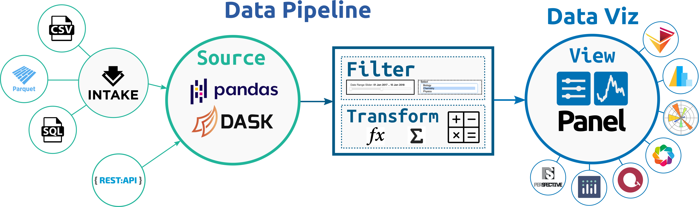

Welcome to Lumen!#

The Lumen project provides a framework for visual analytics, which allows users to build data-driven dashboards using a simple, yet highly expressive, declarative specification.
If you’ve used commerical BI tools you will know the pain of ensuring that the data is in the format required by the visualization components. When data is managed by different teams this means coordinating between teams and pushing the transformation into your database or data lake. Lumen aims to provide an highly extensible system around data intake, data processing and visualization that allows you to quickly iterate to gain insights in your data.
The power of Lumen comes from the ability to leverage the powerful data intake, data processing and data visualization libraries available in the PyData ecosystem.
Data Intake: A flexible system for declaring data sources with strong integration with Intake, allows Lumen to query data from a wide range of sources including many file formats such as CSV or Parquet but also SQL and many others.
Data Processing: Internally Lumen stores data as DataFrame objects, allowing users to leverage familiar APIs for filtering and transforming data using Pandas while also providing the ability to scale these transformations out to a cluster thanks to Dask but also allows you to dynamically generate SQL queries to push the computation into your database.
Data Visualization: Since Lumen is built on Panel all the most popular plotting libraries and many other components such as powerful datagrids and BI indicators are supported.
The core strengths of Lumen include:
Flexibility: The design of Lumen allows flexibly combining data intake, data processing and data visualization into a simple declarative pipeline.
Extensibility: Every part of Lumen is designed to be extended letting you define custom Source, Filter, Transform and View components.
Scalability: Lumen is designed with performance in mind and supports scalable Dask DataFrames out of the box, letting you scale to datasets larger than memory or even scale out to a cluster.
Security: Lumen ships with a wide range of OAuth providers out of the box, making it a breeze to add authentication to your applications.
Build reusable components to drive your visual analytics that can be reused even by team members who are not Python experts.
Install Lumen in a few easy steps
How to build a Lumen dashboard
Get an overview of the core concepts of Lumen
Discover how to build powerful data pipelines with with Lumen.